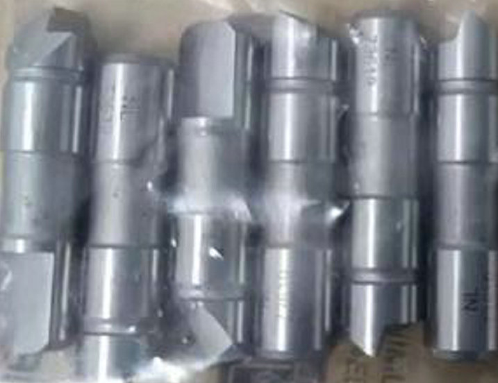
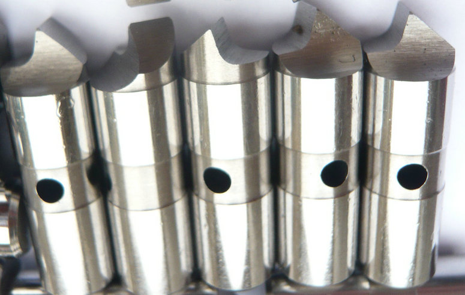
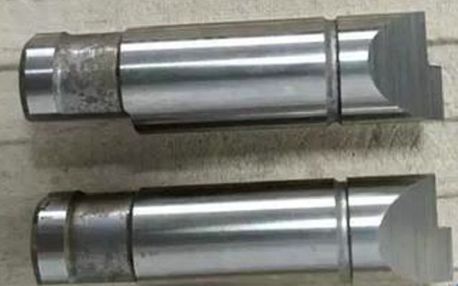
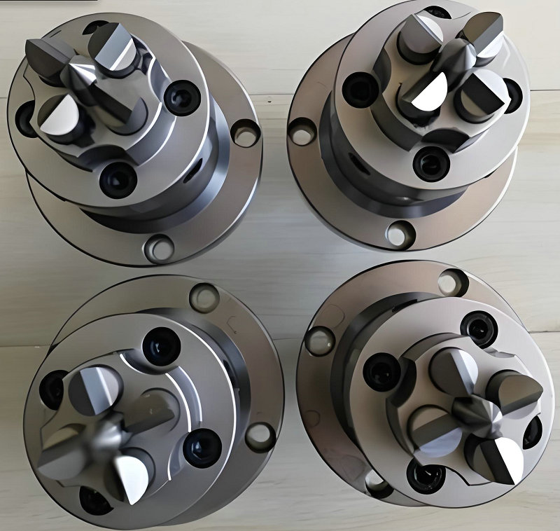

manufacturer of Movable (spring‑loaded or floating) center Driver pins and Fixed Drive pins!


S7 central style drive pins are ideal for: Heavy‑duty turning of crankshafts, camshafts, and large gear shafts Hard turning (up to 65 HRC) with interrupted cuts Robotic actuator shafts and precision transmission components.
At our manufacturing facility, we specialize exclusively in S7 central style drive pins – custom‑made to your drawing, your sample, or your face driver model number. Stop settling for brittle carbide or weak steel central pins. Choose S7 central style drive pins – custom‑made for your face driver and your toughest jobs. Contact us today with your drawing, sample, or driver model. We deliver precision where it matters most.


Movable (spring‑loaded or floating) center pins – These automatically compensate for minor end‑face irregularities or pilot hole variations (up to 5‑7°). They are ideal for general turning, hard turning, and medium‑roughing operations, achieving runout accuracy of 0.02 mm or better.Fixed center pins – Locked rigidly in place, these provide maximum stiffness and are used for ultra‑precision finishing, such as aerospace or medical components, where runout must be as low as 0.002–0.005 mm.
in any high-performance face driving system, the central style drive pin plays a unique and critical role. While the outer drive pins embed into the workpiece end face to transmit torque, the central pin establishes the exact axis of rotation. It is the absolute reference point that aligns the spindle, the workpiece, and the tailstock center. Without a precision central pin, even the strongest drive pins cannot guarantee concentricity, repeatability, or surface finish.
Applicable Workpieces for Central Drive Pins
| Workpiece Type | Explanation | ||||||||||
|---|---|---|---|---|---|---|---|---|---|---|---|
| Thin-walled sleeves | Uniform force distribution on the end face prevents deformation | ||||||||||
| Precision shafts | High surface finish requirement; avoids marking or indentation | ||||||||||
| Heat-treated workpieces | High hardness; aggressive pin penetration is not suitable | ||||||||||
| Soft metal workpieces (e.g., aluminum, brass, copper) | Prevents crushing or scratching of the end face | ||||||||||
| Finished or semi-finished parts with machined end faces | Protects already-machined surfaces from damage | ||||||||||
| Gear blanks (finish turning stage) | Requires uniform clamping force to ensure gear tooth accuracy | ||||||||||
Unlike offset or standard drive pins, the central pin sits precisely on the driver’s rotational axis. It functions as a built‑in, high‑precision live or dead center. In most face drivers, the central pin works in direct cooperation with the machine’s tailstock center. The tailstock pushes the workpiece against the driver; the central pin receives that force and ensures the workpiece rotates exactly around its intended centerline. Meanwhile, the surrounding drive pins engage the end face to transfer torque.
- home
- products
- contact
- equipments
- face driver pins
- offset driving parts
- half offset drive pins
- central driver parts
- standard/ Fixed driving pins
- Lowered drive parts
- clockwise driver pins
- counterclockwise driving parts
- full width drive pins
- life driver parts
- chisel-edged driving pins
- floating drive parts
- power-operated driver pins
- hydraulic driving parts
- mechanical drive pins
- SB driver parts
- FFB driving pins
- carbide driver pins
- tool steel S7 driving parts
- changeable pins